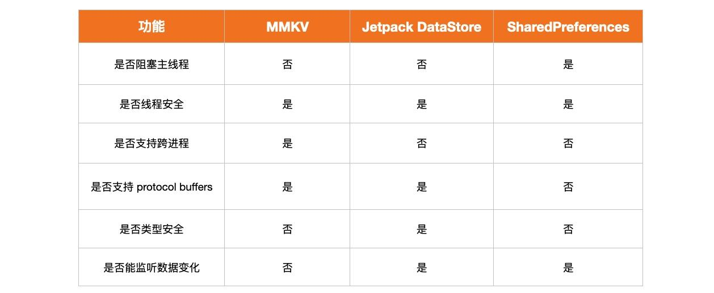

概述
Jetpack DataStore 是一个轻量级数据存储方案，它使用了 Kotlin 协程和 Flow 的特性，目前有两种方式：
- 基于 key-value 的 Preferences DataStore
- 基于 protocol buffers 的 Proto DataStore
依赖：
1 | // Preferences DataStore |
DataStore 目前还是 alpha 版本，如果要替代 SharedPreferences, 可以先使用腾讯的 MMKV。
Preferences DataStore
创建Preferences DataStore
1 | val dataStore: DataStore<Preferences> = context.createDataStore(name = "settings") |
读操作
1 | val key = preferencesKey<Int>("counter") |
写操作
1 | GlobalScope.launch { |
小结
数据文件存储位置: /data/data/$pkg/files/datastore/settings.preferences_pb。
Proto DataStore
- Preference DataStore 主要是为了解决 SharedPreferences 所带来的性能问题
- Proto DataStore 比 Preference DataStore 更加灵活，支持更多的类型
- Preference DataStore 支持 Int, Long, Boolean, Float, String
- protocol buffers 支持的类型，Proto DataStore 都支持
- Preference DataStore 以 XML 的形式存储 key-value 数据，可读性很好
- Proto DataStore 使用了二进制编码压缩，体积更小，速度比 XML 更快
Protocol Buffers: Protocol buffers are Google’s language-neutral, platform-neutral, extensible mechanism for serializing structured data – think XML, but smaller, faster, and simpler. You define how you want your data to be structured once, then you can use special generated source code to easily write and read your structured data to and from a variety of data streams and using a variety of languages. Protocol buffers currently support generated code in Java, Python, Objective-C, and C++. With our new proto3 language version, you can also work with Dart, Go, Ruby, and C#, with more languages to come.
protobuf language guide: 介绍 protobuf 的语法。
总结
MMKV, DataStore, SharedPreferences 的不同之处如下：
